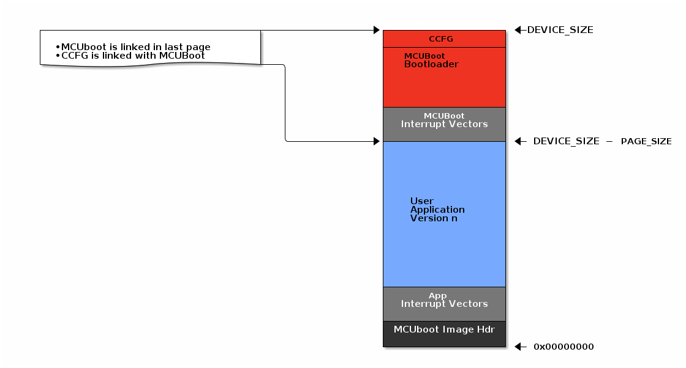
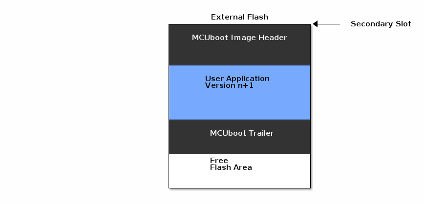

Flash Layout for Off-Chip OAD¶
This section will describe the method for placing images in external flash when using off-chip OAD.
The external flash refers to an external SPI flash memory connected to the CC13xx or CC26xx via SPI.
Constraints and Requirements for Off-chip OAD¶
In order to perform an Off-chip OAD the target system must have:
An off-chip flash storage as large as the application size + one external flash page to store the external flash image header.
A serial connection (SPI) is used to communicate with the off-chip flash component.
Free GPIO pins to interface to the external memory (i.e. 4 wires for SPI)
Internal Flash Memory Layout¶
The internal flash of the device contains the active user application and the MCUboot application. Off-chip OAD maximizes the available flash space to the user application because of its ability to store the incoming image in external flash during the download process.

External Flash Memory Layout¶
Currently the MCUBoot based off-chip OAD supports having only one downloaded image on the external flash. Since the overwrite method is used for WiSUN OAD, to use this downloaded image it must be copied into the primary slot.
